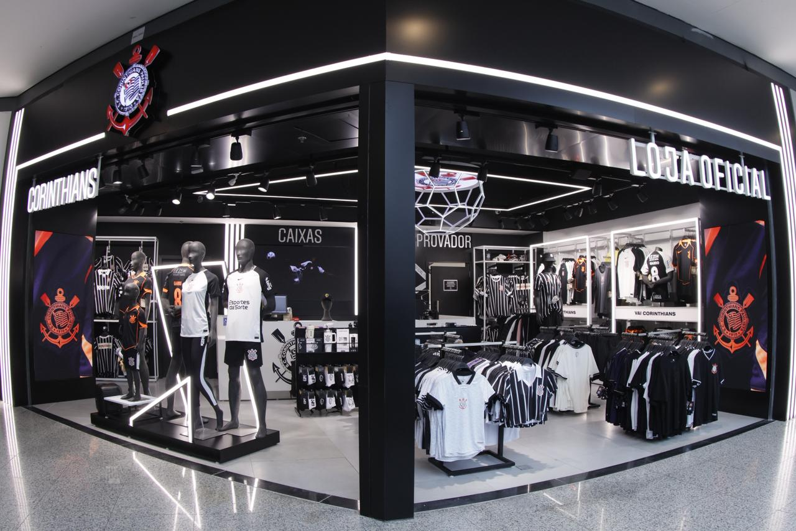

Glossário do Torcedor Corinthiano
Antes de conferir as perguntas frequentes, conheça alguns termos importantes para o fiel torcedor. Este glossário vai ajudá-lo a entender melhor o universo corinthiano.
- Fiel Torcedor
- Programa de sócio-torcedor do Corinthians. O associado tem direito a descontos em ingressos, prioridade na compra de entradas e benefícios exclusivos na loja oficial. Existem diversos planos disponíveis.
- Meia-Entrada
- Benefício garantido por lei a estudantes, idosos (acima de 60 anos), pessoas com deficiência e jovens de baixa renda. O desconto é de 50% sobre o valor do ingresso inteiro. É necessário apresentar documentação comprobatória.
- Setor Leste
- Setor da Arena Corinthians localizado atrás de um dos gols. É o setor tradicionalmente ocupado pela Fiel Torcida organizada e costuma ter os ingressos mais acessíveis do estádio.
- Derby
- Nome dado ao clássico entre Corinthians e Palmeiras, considerado o maior rivalidade do futebol paulista. O termo vem do inglês e se refere a jogos entre grandes rivais locais.
- Camisa 1
- A camisa oficial de jogo do Corinthians, tradicionalmente nas cores branca com detalhes pretos. É o manto sagrado do torcedor e o item mais vendido da loja oficial.
- Arena Corinthians
- Estádio oficial do Corinthians, inaugurado em 2014 para a Copa do Mundo FIFA. Localizada em Itaquera, zona leste de São Paulo, possui capacidade para aproximadamente 49.000 torcedores. Atualmente chamada de Neo Química Arena por razões de naming rights.
- Timão
- Apelido carinhoso dado ao Corinthians por sua torcida. Representa a grandeza e força do clube. É amplamente utilizado pela mídia esportiva e pelos torcedores.
- Bando de Loucos
- Expressão que se tornou símbolo da torcida corinthiana. Representa a paixão irracional e incondicional dos torcedores pelo clube, que acompanham o time em qualquer circunstância.

Interior da Loja Oficial do Corinthians
Perguntas e Respostas
1. Qual o horário de funcionamento da loja?
A Loja Oficial do Corinthians funciona de segunda a sábado, das 9h às 21h, e aos domingos e feriados, das 10h às 18h. Em dias de jogo na Arena, a loja abre 3 horas antes da partida e fecha 1 hora após o término. Horários sujeitos a alteração em feriados especiais.
2. É possível trocar produtos comprados na loja?
Sim! Aceitamos trocas em até 30 dias após a compra, desde que o produto esteja em perfeitas condições, com etiqueta e nota fiscal. Produtos personalizados com nome e número não podem ser trocados, exceto em caso de defeito de fabricação. Guarde sempre sua nota fiscal!
3. A loja aceita quais formas de pagamento?
Aceitamos Pix, cartões de crédito e débito (todas as bandeiras), dinheiro e boleto bancário (apenas para compras acima de R$100,00). Para sócios Fiel Torcedor, oferecemos parcelamento em até 6x sem juros em todos os produtos da loja.
4. Como faço para me tornar sócio Fiel Torcedor?
Você pode se cadastrar diretamente na loja, pelo site oficial ou através do nosso sistema de cadastro. Basta acessar a página de Cadastro de Sócio e preencher o formulário com seus dados. Existem diferentes planos para atender a todos os perfis de torcedores. Consulte os benefícios de cada plano na página de cadastro.